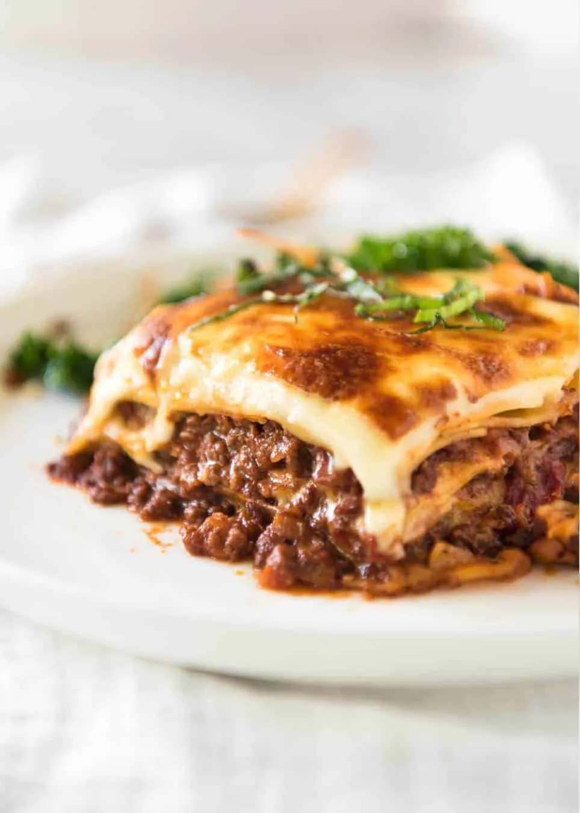

Odin Recipes

Lasagna
Lasagna is a classic Italian dish that's rich, comforting, and perfect for feeding a crowd. It typically consists of layers of pasta, meat sauce, cheese, and sometimes vegetables.
Ingredients
For the Meat Sauce
- 2 tbsp olive oil
- 1 onion, finely chopped
- 2 cloves garlic, minced
- 1 lb (450 g) ground beef (or a mix of beef and pork)
- 1 can (14.5 oz) crushed tomatoes
- 1 can (6 oz) tomato paste
- 1/2 cup red wine (optional)
- 1 tsp dried basil
- 1 tsp dried oregano
- 1/2 tsp dried thyme
- 1/4 tsp red pepper flakes (optional)
- Salt and pepper to taste
- 1 tbsp sugar (optional, to balance acidity)
For the Cheese Mixture:
- 15 oz (425 g) ricotta cheese
- 1 egg
- 1/2 cup grated Parmesan cheese
- 1 cup shredded mozzarella cheese (plus extra for topping)
- 1/4 cup chopped fresh parsley (optional)
For the Lasagna
- 12 lasagna noodles
- 2 cups shredded mozzarella cheese (for topping)
- Fresh basil or parsley for garnish (optional)
Steps
Prepare the meat stew
- Heat olive oil in a large skillet over medium heat. Add the chopped onion and cook until softened, about 5 minutes.
- Add the minced garlic and cook for another minute.
- Add the ground beef (and pork if using), breaking it up with a spoon. Cook until browned and cooked through.
- Stir in the crushed tomatoes, tomato paste, and red wine (if using). Add the dried basil, oregano, thyme, red pepper flakes (if using), salt, and pepper. If the sauce is too acidic, add a tablespoon of sugar.
- Simmer the sauce on low heat for about 30 minutes, stirring occasionally.
Prepare the Cheese Mixture:
- In a medium bowl, combine ricotta cheese, egg, Parmesan cheese, mozzarella cheese, and parsley (if using). Mix well and set aside.
Cook the Lasagna Noodles:
- Cook the lasagna noodles according to the package instructions until al dente. Drain and lay them out on a sheet of parchment paper or lightly grease them to prevent sticking.
Assemble the Lasagna:
- Preheat your oven to 375°F (190°C).
- Spread a thin layer of meat sauce on the bottom of a 9x13-inch baking dish.
- Place a layer of lasagna noodles over the sauce, slightly overlapping them if necessary.
- Spread a layer of the cheese mixture over the noodles.
- Add a layer of meat sauce over the cheese mixture.
- Repeat the layers, ending with a layer of noodles topped with the remaining meat sauce.
- Sprinkle the remaining shredded mozzarella cheese on top.
Bake:
- Cover the baking dish with aluminum foil and bake for 25 minutes.
- Remove the foil and bake for an additional 25 minutes, or until the top is bubbly and golden brown.
- Let the lasagna cool for about 15 minutes before slicing. This helps the layers set and makes serving easier.
Garnish and Serve:
- Garnish with fresh basil or parsley if desired. Serve with a side salad and garlic bread for a complete meal.